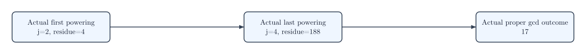
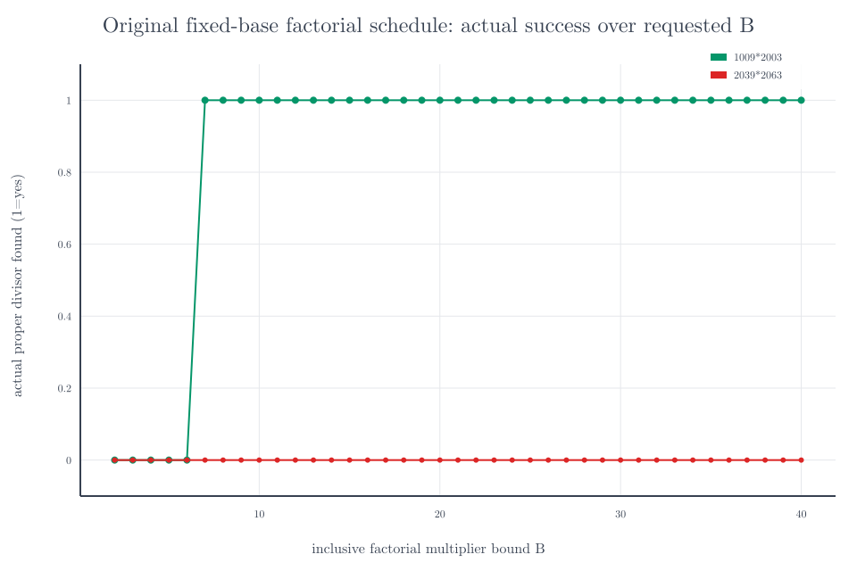
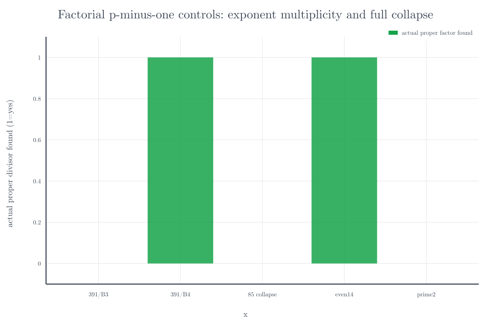
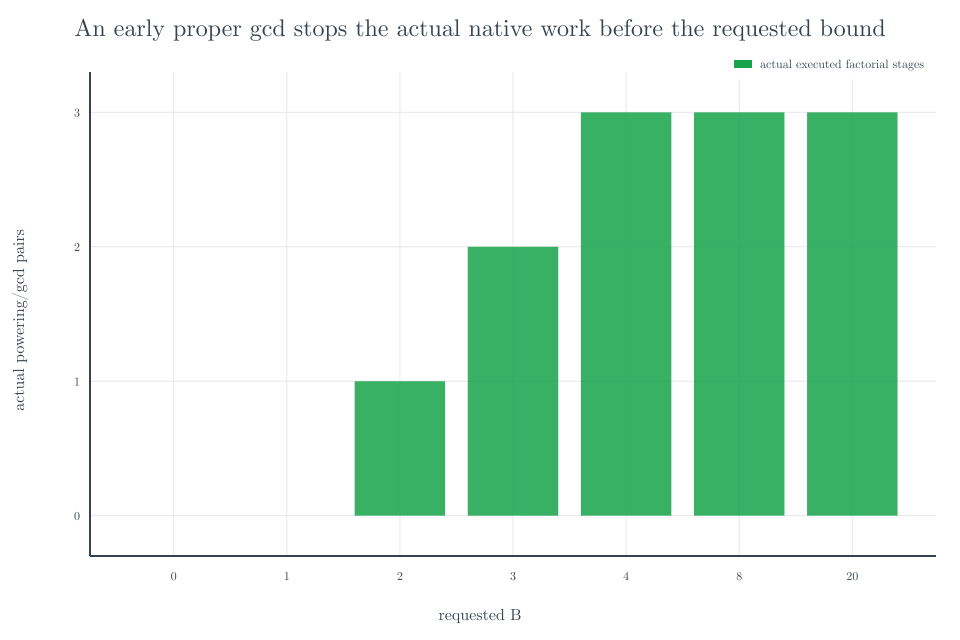

P-minus-one: actual factorial exponents and early gcds
Abstract
Study the actual native producer from a tiny, inspectable example through the retained original experiment and explicit boundary/work controls. Complete editable C++ programs own every rendered native figure.
Mechanism and scope
The fixed-base native routine repeatedly raises its current residue to j, so the exponent after stage j is j!, not lcm(1,...,j). It tests a gcd after every stage and stops immediately at either a proper factor or complete collapse to n. A factor’s base order dividing j! is sufficient to enter the gcd, but isolating one factor also requires the other factors not to collapse simultaneously. Reaching the largest prime of p-1 is not a general success condition. Original smooth and safe-prime fixtures remain, with actual counterexamples to overbroad claims.
A tiny actual producing history
The table reads actual producing records. The native diagram names actual captured values from that same run.
#include <dm/dm.hpp>
int main() {
std::filesystem::create_directories("build");
auto t = dm::algorithms::pollard_p_minus_one_trace(391, 4);
std::print("\n| actual j | residue before | actual powered residue | actual gcd |\n| ---: | ---: | ---: | " "---: |\n");
for (auto &r : t.stages)
std::print("| {} | {} | {} | {} |\n", r.j, r.before, r.after, r.gcd);
dm::graphics::Diagram d;
d.node("n0", {0, 0},
std::format("Actual first powering\nj={}, residue={}",
t.stages.front().j, t.stages.front().after));
d.node("n1", {9, 0},
std::format("Actual last powering\nj={}, residue={}",
t.stages.back().j, t.stages.back().after));
d.node("n2", {18, 0},
std::format("Actual proper gcd outcome\n{}", t.run.divisor));
d.edge("n0", "n1").edge("n1", "n2");
d.save_svg("build/pollard_p_minus_1_tiny.svg");
}| actual j | residue before | actual powered residue | actual gcd |
|---|---|---|---|
| 2 | 2 | 4 | 1 |
| 3 | 4 | 64 | 1 |
| 4 | 64 | 188 | 17 |

The retained original experiment
#include <dm/dm.hpp>
int main() {
std::filesystem::create_directories("build");
const std::uint64_t smooth = 1009ULL * 2003, safe = 2039ULL * 2063;
std::print("\n| original modulus | B | actual proper divisor (zero = unresolved) |\n| ---: | ---: | ---: " "|\n| {} | 20 | {} |\n| {} | 50 | {} |\n| {} | 1100 | {} |\n",
smooth, dm::algorithms::pollard_p_minus_1(smooth, 20), safe,
dm::algorithms::pollard_p_minus_1(safe, 50), safe,
dm::algorithms::pollard_p_minus_1(safe, 1100));
std::vector<double> x, a, b;
std::print("\n| B | actual smooth-case factor | actual safe-case factor |\n| ---: | ---: | ---: |\n");
for (std::uint64_t bound = 2; bound <= 40; ++bound) {
auto f =
dm::algorithms::pollard_p_minus_1(smooth, bound), g =
dm::algorithms::pollard_p_minus_1(safe, bound);
x.push_back(bound);
a.push_back(f != 0);
b.push_back(g != 0);
if (bound % 4 == 0)
std::print("| {} | {} | {} |\n", bound, f, g);
}
auto p = dm::graphics::RPlot::create();
p.lines(x, a, "1009*2003", {5, 150, 105}).points(x, a, {5, 150, 105}, 4).lines(x, b, "2039*2063", {220, 38, 38}).points(x, b, {220, 38, 38}, 3).title("Original fixed-base factorial schedule: actual success over requested B").x_label("inclusive factorial multiplier bound B").y_label("actual proper divisor found (1=yes)");
p.save_svg("build/pollard_p_minus_1_original.svg");
}| original modulus | B | actual proper divisor (zero = unresolved) |
|---|---|---|
| 2021027 | 20 | 1009 |
| 4206457 | 50 | 0 |
| 4206457 | 1100 | 2039 |
| B | actual smooth-case factor | actual safe-case factor |
|---|---|---|
| 4 | 0 | 0 |
| 8 | 1009 | 0 |
| 12 | 1009 | 0 |
| 16 | 1009 | 0 |
| 20 | 1009 | 0 |
| 24 | 1009 | 0 |
| 28 | 1009 | 0 |
| 32 | 1009 | 0 |
| 36 | 1009 | 0 |
| 40 | 1009 | 0 |

Explicit controls
#include <dm/dm.hpp>
int main() {
std::filesystem::create_directories("build");
struct Case {
std::uint64_t n, bound;
const char *name;
};
std::vector<double> v;
std::vector<std::string> labels;
std::print("\n| case | actual divisor | actual stages | full collapse | small-prime shortcut |\n| --- | " "---: | ---: | --- | --- |\n");
for (auto c : std::vector<Case>{{391, 3, "391/B3"}, {391, 4, "391/B4"},
{85, 4, "85 collapse"}, {14, 20, "even14"},
{2, 20, "prime2"}}) {
auto r = dm::algorithms::pollard_p_minus_one_run(c.n, c.bound);
v.push_back(r.divisor != 0);
labels.push_back(c.name);
std::print("| {} | {} | {} | {} | {} |\n", c.name, r.divisor, r.stages,
r.stop == dm::algorithms::PMinusOneStop::Collapsed,
r.stop == dm::algorithms::PMinusOneStop::SmallPrime);
}
auto p =
dm::graphics::RPlot::barplot(v, labels, "actual proper factor found");
p.title("Factorial p-minus-one controls: exponent multiplicity and full collapse").y_label("actual proper divisor found (1=yes)");
p.save_svg("build/pollard_p_minus_1_controls.svg");
}| case | actual divisor | actual stages | full collapse | small-prime shortcut |
|---|---|---|---|---|
| 391/B3 | 0 | 2 | false | false |
| 391/B4 | 17 | 3 | false | false |
| 85 collapse | 0 | 3 | true | false |
| even14 | 2 | 0 | false | false |
| prime2 | 0 | 0 | false | true |

Actual selected work
#include <dm/dm.hpp>
int main() {
std::filesystem::create_directories("build");
std::vector<double> v;
std::vector<std::string> labels;
std::print("\n| requested bound B | actual powering/gcd stages | actual proper divisor |\n| ---: | ---: | " "---: |\n");
for (std::uint64_t bound : {0ULL, 1ULL, 2ULL, 3ULL, 4ULL, 8ULL, 20ULL}) {
auto r = dm::algorithms::pollard_p_minus_one_run(391, bound);
labels.push_back(std::to_string(bound));
v.push_back(r.stages);
std::print("| {} | {} | {} |\n", bound, r.stages, r.divisor);
}
auto p =
dm::graphics::RPlot::barplot(v, labels,
"actual executed factorial stages");
p.title("An early proper gcd stops the actual native work before the requested bound").x_label("requested B").y_label("actual powering/gcd pairs");
p.save_svg("build/pollard_p_minus_1_work.svg");
}| requested bound B | actual powering/gcd stages | actual proper divisor |
|---|---|---|
| 0 | 0 | 0 |
| 1 | 0 | 0 |
| 2 | 1 | 0 |
| 3 | 2 | 0 |
| 4 | 3 | 17 |
| 8 | 3 | 17 |
| 20 | 3 | 17 |

API and interpretation
Every block is a complete editable C++ program. Reusable searches, walks, geometry decisions, fixture histories and algorithm work live in the canonical library. Captured records own their values and are not reconstructed by a second algorithm in the report. Explicit policies count the documented selected calls, records or scalar entries; they are not peak-byte or wall-clock budgets. Original reference curves are labelled as references, and finite returned results are not promoted into universal convergence, recovery, scaling or speed guarantees.
Python factorial exponents and exact gcds check every captured stage, including
smooth and safe-prime products and collapse controls. Frozen comparisons
preserve 4985 ordinary attempts; n=2 now correctly has no proper factor. The
shared batch passes83 native regression tests,18 directly instrumented sanitizer
tests,84 compiled and executed public examples,391/391 scoped documentation
definitions, standalone and installed header checks, a linked installed consumer
and ten representative symbol hovers. All four complete programs execute and
their computed results and local figures survive HTML and Markdown export. Build
receipts: build/mepml-conversion/batch-284-293/.